Клубный ПК 14
Введите код активации
Код выдаётся после заявки для клуба или отдельно для игрока.
Нет кода? Напишите на support@veliq.app
Выключено
Нажмите кнопку, чтобы YouTube, Discord, Telegram и ChatGPT заработали.
Сервисы
Сервисы, для которых VELIQ открывает доступ. Остальные соединения VELIQ ведёт по самому быстрому пути сам.
| Сервис | Маршрут | Сервер | Сегодня | Вкл. |
|---|---|---|---|---|
YT YouTubeyoutube.com, googlevideo.com | через VELIQ | 1,02 ГБ | ||
DS Discordсайт, приложение, голос | через VELIQ | 118 МБ | ||
TG Telegramсайт и приложение | через VELIQ | 64 МБ | ||
AI ChatGPTchatgpt.com, openai.com | только через VELIQ | 22 МБ | ||
CL Claudeclaude.ai, anthropic.com | только через VELIQ | 9 МБ | ||
IG Instagraminstagram.com | через VELIQ | 0 МБ | ||
VK vk.ruдобавлен вручную | авто | — |
«Только через VELIQ» — сервис не откроется в обход серверов VELIQ, даже если они недоступны. Так ваш адрес не уйдёт сервису.
Игры
Выберите режим для игры. Пинг VELIQ пока не замеряет, поэтому режим «Через VELIQ» может его увеличить.
Диагностика
Проверка всех частей VELIQ. Отчёт можно отправить в поддержку — в нём нет паролей и ключей.
Через серверы VELIQ по приложениям
с момента включения| Приложение | Сервер | Соединений | Получено / отправлено |
|---|---|---|---|
| chrome.exe | Хельсинки | 184 | |
| Discord.exe | Хельсинки | 23 | |
| Telegram.exe | Хельсинки | 9 | |
| cs2.exe | Хельсинки, авто | 2 |
Журнал
14:30:02 служба запущена, версия 1.0.0 14:30:03 перехват: драйвер загружен, IPv4 14:30:04 сервер veliq-hel-01: 38 мс, veliq-swe-01: 46 мс — выбран Хельсинки 14:30:04 Chrome: маршрут подключён без перезапуска 14:30:05 Edge: не запущен — подключится при старте 14:31:40 YouTube: первое соединение через Хельсинки, 212 мс 14:32:10 cs2.exe: сравнение путей — Хельсинки 41 мс, обычный 72 мс, выбран Хельсинки 14:32:58 telegram: сервер не ответил за 2 с — повтор через Швецию 14:32:59 telegram: соединение через Швецию
Настройки
Активация
Запуск
Сервер
Внешний вид
Обновления
Компьютерный клуб
О программе
Оптимальный маршрут для каждого соединения.
- Версия
- 1.0.0 (сборка f51ec66)
- Служба
- 1.0.0, запущена
- Серверы
- veliq-hel-01, Хельсинки; veliq-swe-01, Швеция
- Устройство
- зарегистрировано
Работает
Маршруты построены: заблокированное открывается, игры идут по самому быстрому пути.
- СерверХельсинки, 38 мс
- Игрысамый быстрый путь
- Если что-то не открываетсяпозовите администратора
Добавить сайт или приложение
VELIQ подберёт маршрут для сайта или программы. Можно закрепить путь вручную.
Включить режим клуба?
Гость увидит только состояние и кнопку. Настройки откроются по паролю. VELIQ будет оптимизировать сам после каждой перезагрузки.
Вход для администратора
Введите пароль, чтобы открыть настройки VELIQ на этом компьютере.